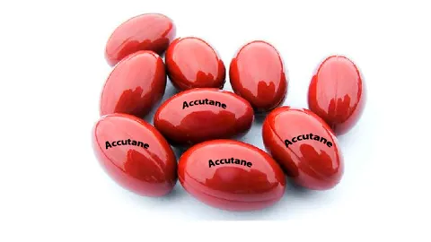
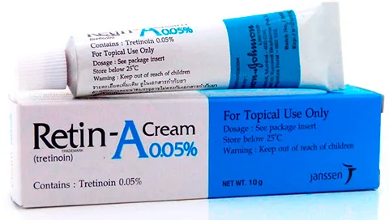

Accutane (Isotretinoin) without prescription
Accutane is a Vitamin A formulation used for treating severe forms of nodular acne. The drug lowers the activity of oil glands in the skin, making it healthier and able to renew itself faster. Accutane is usually prescribed in cases where other anti acne drugs have manifested themselves to be ineffective.
Taking Accutane Take Accutane exactly as prescribed by your doctor. You may be scheduled additional checks and blood tests while taking the drug, so make sure to not miss any single of them. Take Accutane with enough food or milk, don't chew or crush the tablet as the content may cause irritation.
Accutane is known to cause severe side-effects in new born babies so make absolutely sure you're not pregnant or are going to become pregnant during or after a short time after the medication course. FDA strongly imposes birth control mechanisms to be employed during the course of Accutane.
Retin-A without prescription
No matter what are you are acne can strike at the worst times. Acne is a skin problem caused by imbalanced hormones and chemistry in your body.
Retin A is the treatment for your skin to keep your outbreaks to a very minimum. Retin A also will allow your skin to heal without the scars because it promotes quick healing.
Using Retin A is easy to use. Retin A is a cream that you put on your skin using a very thin layer. Retin A is applied before you are ready to go to bed for the night so it can work while you sleep.
Retin A used all day and all night will not make the medication work any faster.